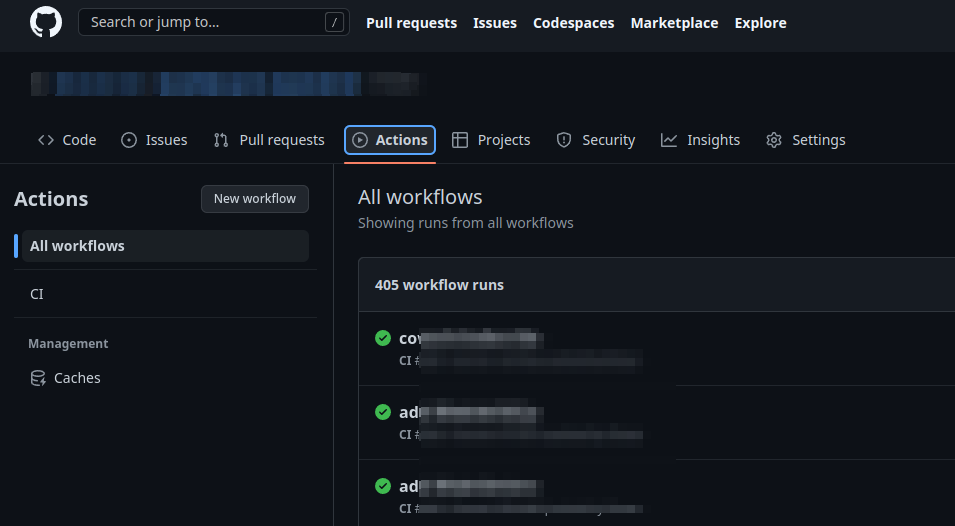
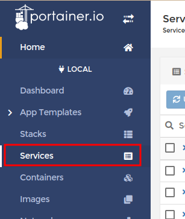
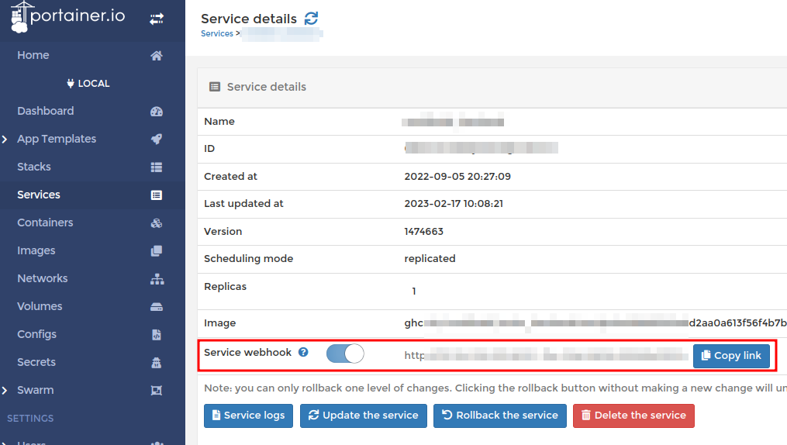

# 新手指南
這是一篇新手進公司後整理內部開發流程的 事故 故事
# 要有光
上班第一天，要緊頭一件事就是 認清自己在食物鏈中的位置 熟悉開發環境，目前公司開發到佈署的流程是原始碼在每個人的環境都有一份，如果有修改再傳修改的檔案給知道怎麼佈署的人去佈署，這方式有時後會漏掉檔案，也很難搞清哪個才是最新版本的程式。而且每個人開發環境不同，剛拿到專案原始碼時啟動失敗，同學會教我一些奇計淫巧至今令我匪夷所思的方法（為什麼要修改 node_modules 內的檔案？）。
- 改的檔案是最新版的嗎？
- 覆蓋別人給的檔案後，原本改好的程式不見了。
- 你給的檔案無法執行，說有缺少 function。
- 『可以只給提供修改的 function 嗎？』「我其實也不太確定耶，還是你整個貼上後試試看有沒有錯誤」
# 新手村
村長跟我介紹村子內 NPC 的功能，還有 server 的佈署方式，程式碼上傳到 GCP linux VM 後使用 docker build 成 image，再使用 docker compose 啟動多個 container 運行服務。有兩個 VM 每個 VM 都有 5 個 container，除了前端、後端程式外還有串接其他服務，使用的程式語言有 Vue.js, Node.js, .NET Core 。
# 程式一致
為了解決程式碼同步問題，挑了可以免費 private 託管的版本控制服務，同學可以遠端上傳程式碼，其他人也可以同步。
- 使用的服務為 。
為什麼要選 GitHub 而不是 PornHub GitLab？忘記了，好像跟 CI/CD 的免費項目有關。難的不是選擇使用的版控服務，而是要上傳哪些程式碼？通常在 server 上運行的就是最新的程式碼，使用 WinSCP 抓下來後當作基準，因為其他同學還有改到一半未上傳的程式碼，所以也收集其他同學的程式碼進行整理合併。整理時發現不是每個人的開發環境設置都一樣，有的人用 Windows 有的人用 Mac。
https://winscp.net/
# 環境一致
雖然程式碼一致了，但相同的程式碼在不同開發環境卻會出現異常，你就用 node 14 就好了阿，沒事幹麻升級自找麻煩 😒 所以開發環境也要一致。最簡單的方法是大家都裝相同的 node 版本，凡是都有個 BUT，全部的專案使用的 node 並不是相同版本，而且不是每個人都會用 NVM。
雖然有的人用 Mac 有的人用 Windows，但是大家都是用 Visual Studio Code，所以把全部的專案都加上 Dev Containers，之後所有人開發的時候，都使用 Dev Containers 進入 container 進行開發。
https://code.visualstudio.com/docs/devcontainers/containers
/2022/05/13/Remote-Containers/
# Docker image auto build
上面提到程式最後都在 server 上 build image 後，使用 docker compose 建立 container 執行。 你終究要 image 的那為什麼不一開始就 image？ 所以把每個專案都加上 GitHub Action，引用原本就有的 Dockerfile 修改，程式上傳後會自動打包成 docker image 且 push 到 GitHub Package
在 GitHub Action 使用下面的 yml，程式碼上傳到 GitHub 後會自動打包成 docker image
Gist Auto build docker image yml
如果設定成功 push 程式碼後可以在 GitHub Action 看到執行動作

https://docs.github.com/en/actions/quickstart
https://github.com/docker/build-push-action
# Docker 管理
鑑於不是所有同學都習慣用 linux，所以在 server 裝上 portainer，可以使用 Web 界面控制 server 上的 docker。一天又平安的過去了，感謝飛天小女警的努力。
https://docs.portainer.io/start/install-ce/server/docker/linux
# 自動佈署
出現 bug 急著修正的時候，可能一天要上傳程式到 server 八百次，但不是所有人都知道怎麼更新到 server，所以維運的同學要多體諒工程師 所以在 portainer 開啟 swarm 功能後，service 就可以啟用 webhook 接收更新通知，收到通知後自動 pull 新的 docker image 進行佈署，不知道怎麼佈署的人可以 POST 呼叫 webhook 進行 service 更新。
docker swarm init |
設定完成後可以在 portainer 選單看到 service 項目

進入 service 可以開啟 Service webhook ，產生的網址就是用來接收通知拉取新 image 重新佈署的

更新 service 還要呼叫 webhook 有點麻煩，就交給 GitHub Action 吧！
在 GitHub Action 加入下面設定後，每次 push/pull_request (根據 main.yml 設定) 就會自動更新。
- name: Call webhook update service | |
uses: muinmomin/webhook-action@v1.0.0 | |
with: | |
url: # 要通知的 webhook URL |
https://docs.portainer.io/user/docker/services/webhooks#enabling-a-service-webhook
https://github.com/muinmomin/webhook-action
# 正式站 / 測試站
當業務外出跟客戶展示系統功能時，如果網站一直更新重啟服務中斷，在客戶端的同學會很尷尬，所以有業務在外展示時工程師可以放假 所以把線上系統分為正式站跟測試站。